Science Computing With Science Friends
James Stevenson
2022/04/27
Outline
- Outline
- Friends
- Git
- Workflow
- Style
- Analysis
Friends?
- Friends we know
- Friends we don't
- Ourselves
Our computational artifacts should be accessible to all of them.
Kinds of computational artifacts:
- Tools
- Analyses
Charles L. Isbell, Lynn Andrea Stein, Robb Cutler, Jeffrey Forbes, Linda Fraser, John Impagliazzo, Viera Proulx, Steve Russ, Richard Thomas, and Yan Xu. 2010. (Re)defining computing curricula by (re)defining computing. SIGCSE Bull. 41, 4 (December 2009), 195–207. DOI:https://doi.org/10.1145/1709424.1709462
Science demands openness
- Show your work (fight the replication crisis)
- If people find you, they can cite you (h-index ^^^^^)
- Uncle Sam pays your salary, sort of
- It's a commitment (https://www.big-data-biology.org/software/commitments/)
Git/GitHub

What's it for?
- Understand code
- Fix bugs
- Manage tasks
- Share work
- Collaborate with new friends
- Backup in case laptop destroyed by ninjas
- ~other things~
Commit history
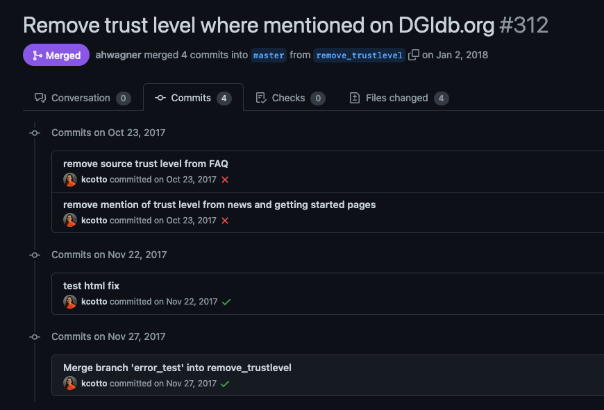Commit history
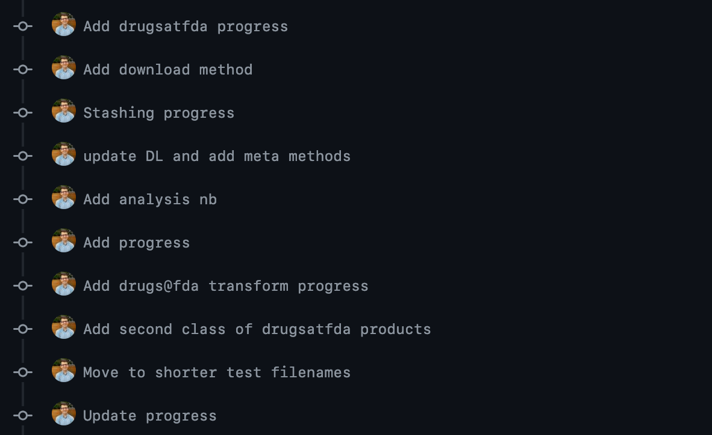command line wowwww colors
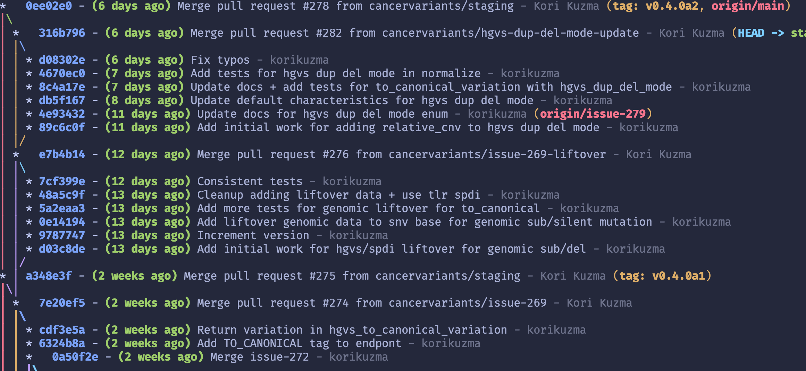diffs
% git diff 3b768ea 9ba82f8
github.com/ga4gh/vrs-python/compare/9ba82f8cc5a..4e9742b
git blame
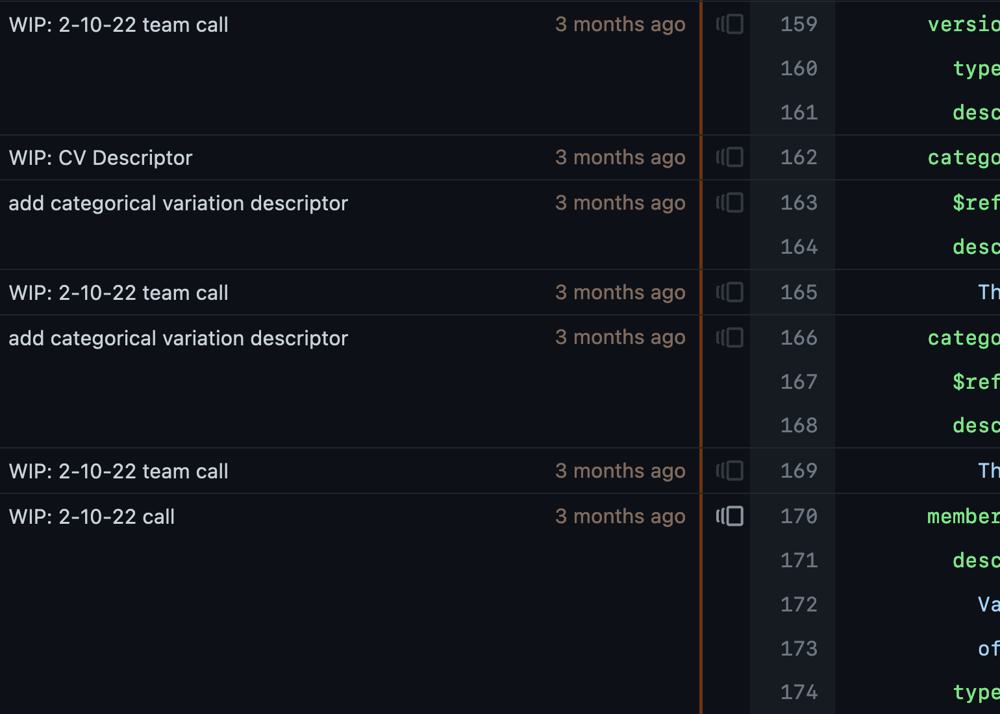git blame
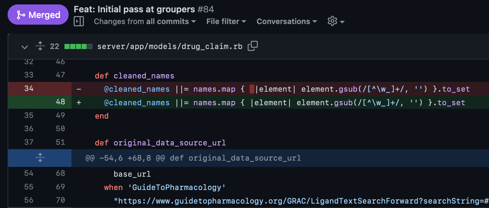ZenHub
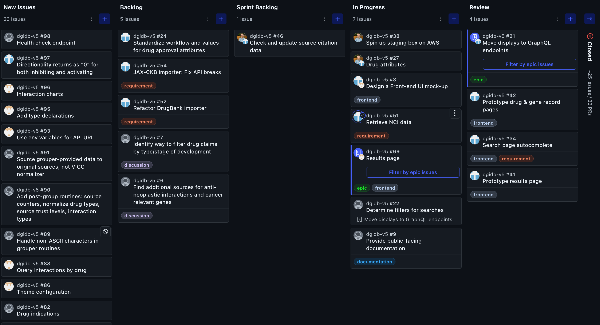Actions
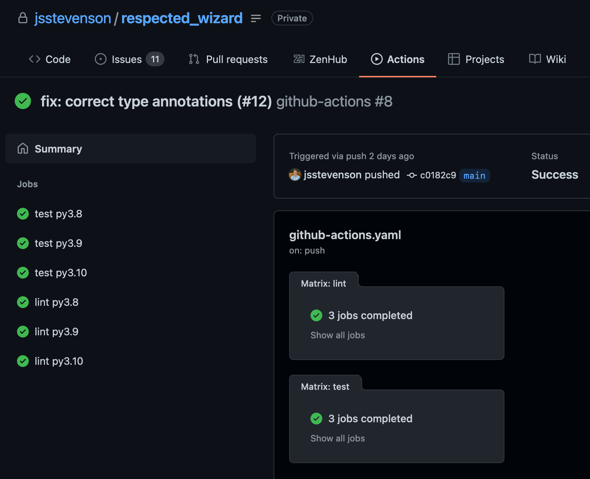What do we need for all of that ^ ?
Good issues
Good commits
A ban on procrastination
But that's hard!
The Wagner Flow™
High level
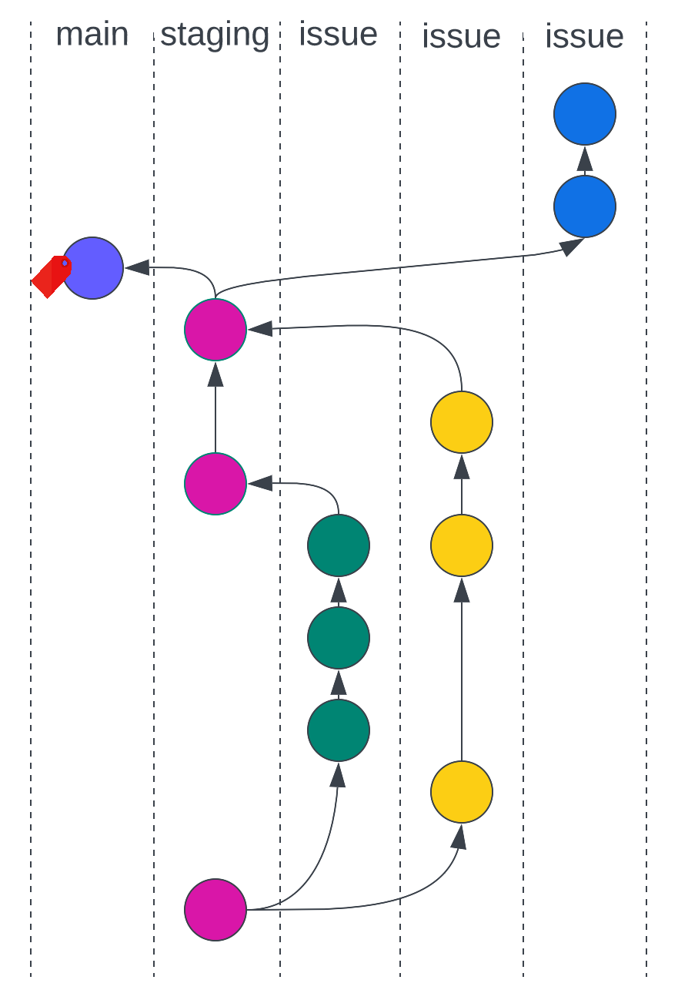Constraints (limits are our friends)
Issues create structure
Commits create sub-structure
1) Issues
- When in doubt, create them
- Errors, features, stray thoughts
- Either edit or add comments with notes
- Break into new issues where appropriate
- They are extremely googleable
2) Claiming an issue
- Self-assign on GitHub
- Create a branch locally, eg
git checkout staging
git checkout -b issue-42
Issues: ask yourself
- Does this issue require tests?
- Does this issue require documentation?
→ Write them first maybe! (TDD)
Write it! (probably last)
3) Commits
- "should" encompass complete, discrete changes
- brief messages in imperative mood, completes the sentence "This commit will..."
- Can use body/footer for additional details (
git commit
w/ no-m "message"
)
Pre-commit
In projects that use it:
pre-commit install
Style checks, other security-y things before commits go through
4) Pull requests
- Your branch → staging
- Most repos have review policies: assign review to maintainers
- Explicate any outstanding questions
- Pay attention to test results in Actions
- When it's ready and approved, merge it yourself
- Manually close issue
Link PRs to issues
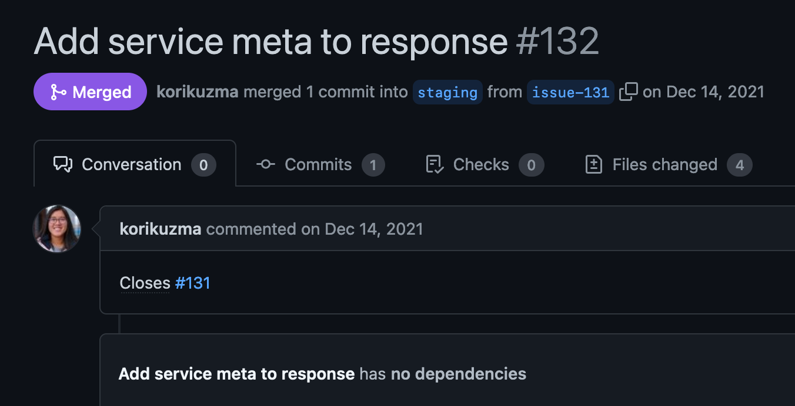CI: Actions
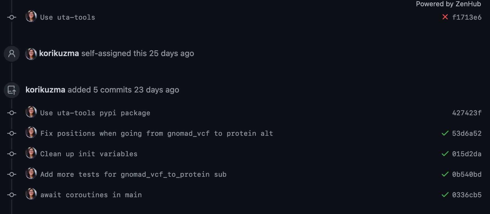Actions
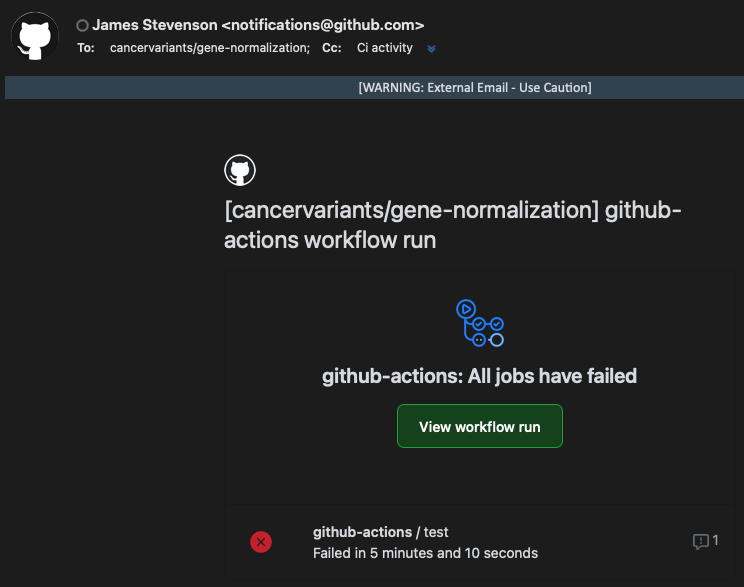Aside: conventional commits
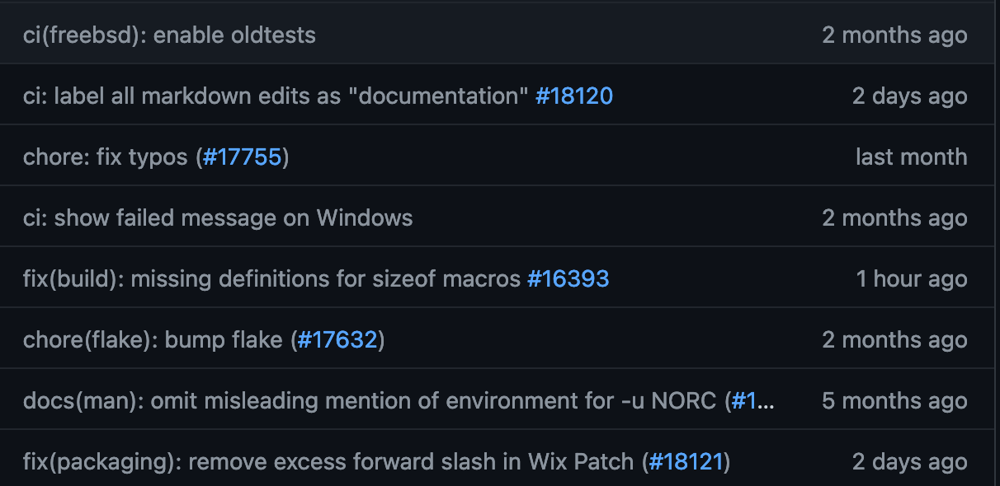type(scope): short description (#pr number)
Conventional commits tools include:
- Autogenerate change logs
- Automatically bump consistent with semantic versioning
- (also good template for commits generally, guardrails are our friends)
Releases
Use semantic versioning: major.minor.patch
CD: Code Pipeline
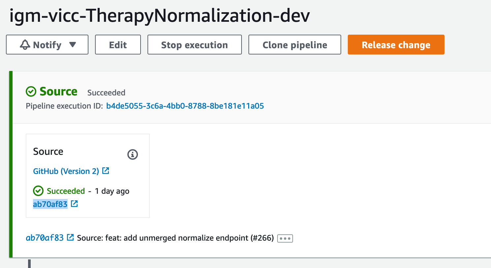Style
Why does it matter?
- Readability, accessibility
- Stunting
- Have some pride in your craft for god's sake
Linting
Flake8: serene, minimal, difficult
Black: automated, deterministic, a little quirky
Comments
"Code should be self-documenting"
Use comments to explain why, not what
Python docstrings
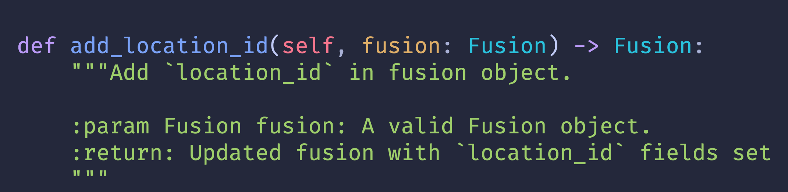Here be monsters
Type annotations
The best kind of documentation
Enable static analysis
~required for wagner projects
Dates
Use ISO-8601.- YYYY-MM-DD
- YYYYMMDD
Analysis
Use virtual environments
pip freeze → generate a lockfile
Sort of a foundation of reproducibility
Sandve GK, Nekrutenko A, Taylor J, Hovig E (2013) Ten Simple Rules for Reproducible Computational Research. PLOS Computational Biology 9(10): e1003285. https://doi.org/10.1371/journal.pcbi.1003285
File locations
Don't hardcode!
- Relative paths from __main__
- Environment variables
- CLI arguments
- Software solutions: https://github.com/cthoyt/pystow
Use markdown cells
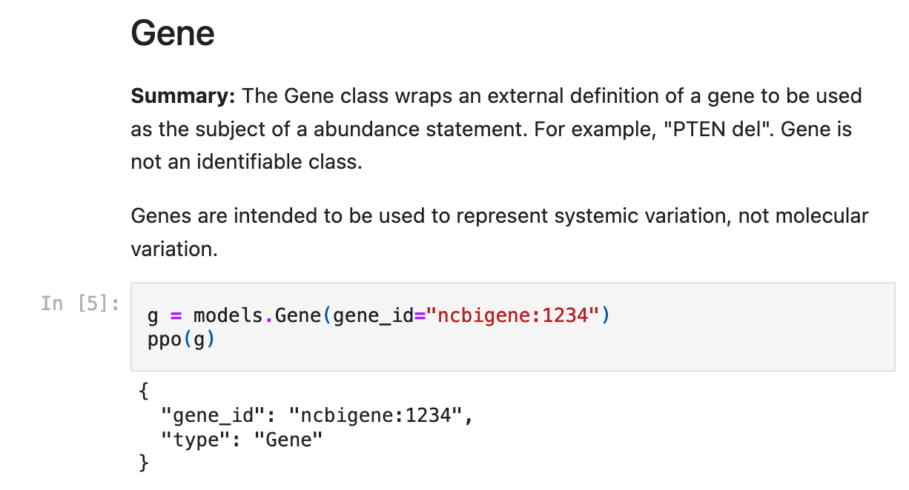Maintain readable notes, like a lab notebook
Add a citation to your repo
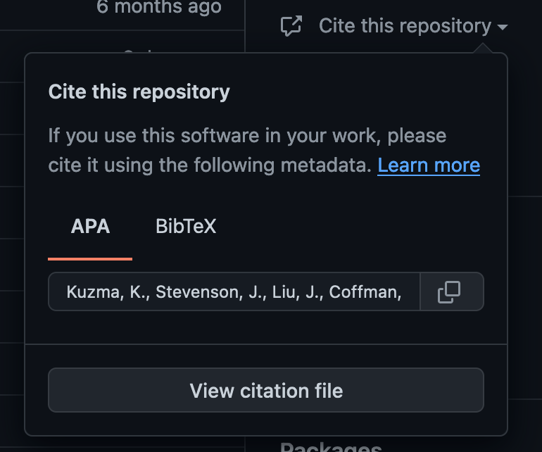I liked this editorial
Rule A, Birmingham A, Zuniga C, Altintas I, Huang SC, et al. (2019) Ten simple rules for writing and sharing computational analyses in Jupyter Notebooks. PLOS Computational Biology 15(7): e1007007. https://doi.org/10.1371/journal.pcbi.1007007
I also like this talk
"I Like Notebooks" by Jeremy Howard
People love writing about this
Further reading
- Wilson et al, "Best Practices for Scientific Computing"
- MIT: "The Missing Semester"
- Luis Coelho lab, "Lab Software Tool Commitments"